Kotlina Krzeszowska od strony zachodniej kończy się na Górach Kruczych. 17 marca 2007 roku postanowiłem zobaczyć kawałek tych gór. Planowana trasa to przejście z Czadrowa do Lipienicy zboczami Długosza i Anielskiej Góry. Zboczami a nie szczytami - bo szczyty są pozbawione widoków na Krzeszów. Z mapy widać jednak, że lasy na Anielskiej Górze kończą się przed samym Krzeszowem, więc tam jednak trzeba iść lasem.
| 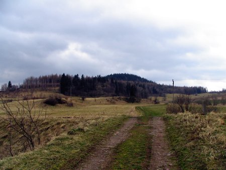 | 14:14 Wycieczkę zacząłem od Bramy Czadrowskiej. W Czadrowie jadąc w stronę Krzeszowa, ok. 200 m od zjazdu na Sanatorium, koło pijalni piwa na zakręcie. Schodzimy z asfaltu drogą prowadzącą przez linię kolejową Kamienna Góra - Krzeszów. Przed nami na pierwszym planie linia kolejowa a dalej zbocze góry Długosz. kliknij na miniaturę z lewej strony aby powiększyć |
| 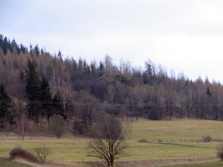 | 14:18 Góra Długosz zaczyna się trzema skałami/skarpami nazywającymi się "Trzej bracia". Na zdjęciu jeden z braci (takie są przynajmniej moje przypuszczenia, ale "górki" takie były trzy i nic innego w okolicy :-). kliknij na miniaturę z lewej strony aby powiększyć |
| 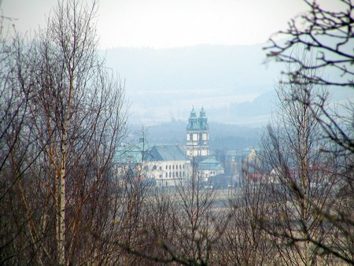 | 14:31 Po lewej stronie w oddali widoczne są zabudowania kompleksu klasztornego w Krzeszowie. kliknij na miniaturę z lewej strony aby powiększyć |
| 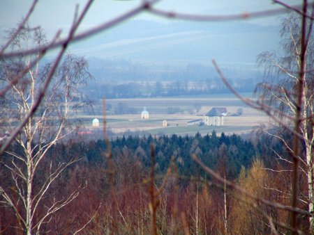 | 14:49 W dalszym ciągu idziemy zboczem Długosza. Po lewej widać krzeszowską Drogę Krzyżową. kliknij na miniaturę z lewej strony aby powiększyć |
| 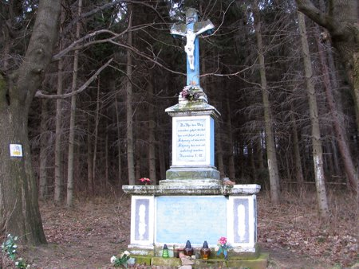 | 14:52 Docieramy do drogi Przedwojów - Betlejem którą wiedzie żółty szlak. Na zdjęciu kapliczka stojąca na poboczu tuż za końcem zabudowań Przedwojowa. kliknij na miniaturę z lewej strony aby powiększyć |
| 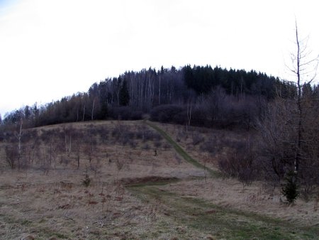 | 15:56 Za nami pozostaje szczyt Długosza (612 m n.p.m.). kliknij na miniaturę z lewej strony aby powiększyć |
| 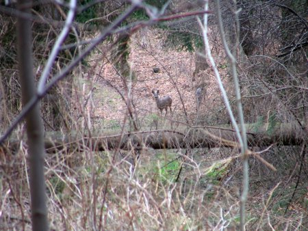 | 15:02 Teraz idziemy w stronę szczytu Anielskiej Góry (651 m n.p.m.). Po drodze w lesie przyglądają się mieszkańcy lasu :-) kliknij na miniaturę z lewej strony aby powiększyć |
| 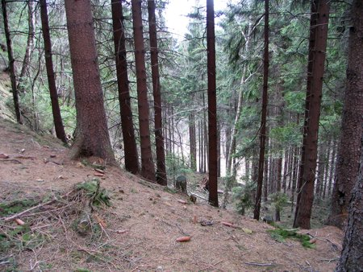 | 15:27 Idąc zboczami Anielskiej Góry cały czas starałem się iść "pod górę" licząc na to, że w ten sposób dojdę na szczyt góry. Miejscami zbocza są naprawdę bardzo strome. Po prawej stronie widać było zabudowania - zapewne był to Przedwojów. kliknij na miniaturę z lewej strony aby powiększyć |
| 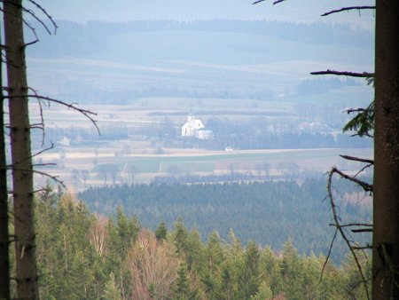 | 15:39 I tak sobie szedłem, ale nie jestem do końca pewien, czy gdzieś po drodze zdobyłem szczyt Anielskiej Góry :-) W końcu po lewej stronie gdzieś między drzewami coś dało się zobaczyć - tutaj kościół w Krzeszówku. Pozwoliło mi to odzyskać trochę orientację w terenie, bo sam nie byłem już do końca pewien czy dobrze idę. kliknij na miniaturę z lewej strony aby powiększyć |
 |
16:02 Schodząc w dół w kierunku Lipienicy zza drzew zaczęła być widoczna fasada krzeszowskiej bazyliki. kliknij na miniaturę z lewej strony aby powiększyć |
| 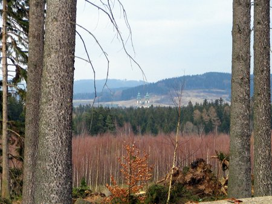 | 16:03 ... i widać ją było coraz lepiej ... kliknij na miniaturę z lewej strony aby powiększyć |
| 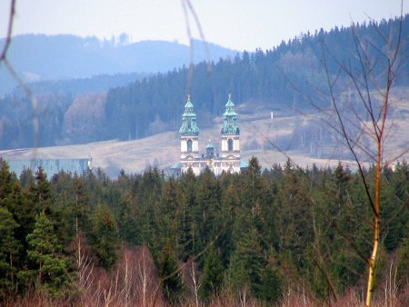 | 16:03 ... i lepiej. kliknij na miniaturę z lewej strony aby powiększyć |
| 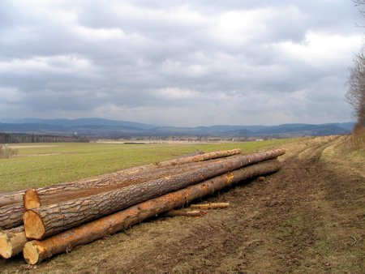 | 16:05 Potem las się skończył i pojawiła się Kotlina Krzeszowska. Na pierwszym planie Lipienica. kliknij na miniaturę z lewej strony aby powiększyć |
| 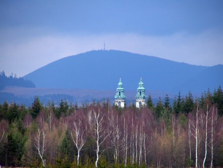 | 16:25 Idąc w stronę zabudowań Lipienicy w oddali widać krzeszowski kościół na tle Chełmca. kliknij na miniaturę z lewej strony aby powiększyć |
| 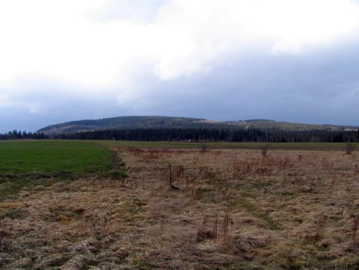 | 16:27 I Anielska Góra w całej swojej okazałości od strony Lipienicy. kliknij na miniaturę z lewej strony aby powiększyć |
| 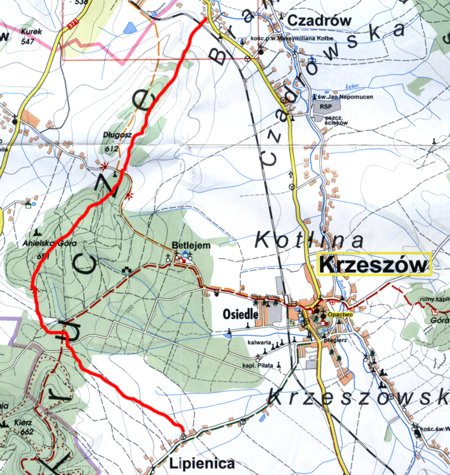 | ... i na koniec trasa wycieczki zaznaczona na fragmencie mapy Kotliny Kamiennogórskiej.
kliknij na miniaturę z lewej strony aby powiększyć |
Czas wycieczki to tylko 2,5 godziny. Stopień trudności zaledwie trochę odbiega od spaceru w parku. Ponieważ jednak wycieczka nie prowadzi żadnym szlakiem trzeba jednak trochę orientować się w terenie - na mapie jest to tylko kilka centymetrów. Ale trudno się zgubić - nawet jeśli stracimy orientację w terenie to i tak za parę kilometrów będzie jakaś miejscowość. Problematyczne jest jednak zdobycie szczytu góry - dookoła tylko las i las, na mapie szczyt zaznaczony jest jako konkretny punkt a w rzeczywistości trudno stwierdzić, czy to już właśnie szczyt góry :-)

{kind=link}
{kind=link}
{kind=link}
{kind=link}
{kind=link}
{kind=link}
{kind=link}
{kind=link}
{kind=link}
{kind=link}
{kind=link}
{kind=link}
{kind=link}
{kind=link}
{kind=link}